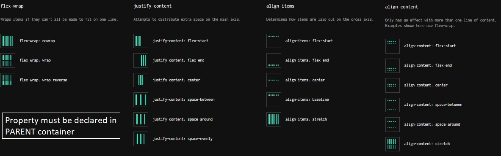
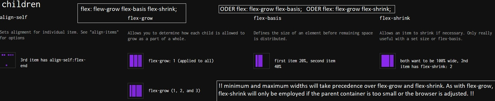
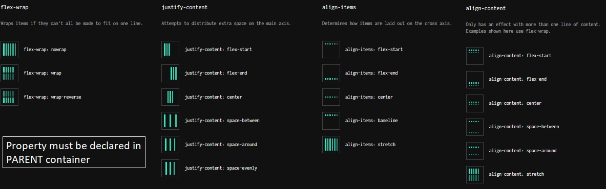
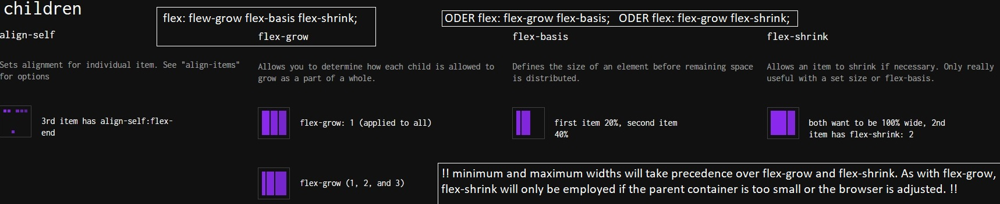

Basics
- CSS-File muss in html in <head> eingefügt werden: <link href="./style.css' rel='stylesheet">
- mehrere selectors auf einmal customizen durch .p, .h1 {}
- von weit zu spezifisch: h1 —> .bold —> #idtitle = im zweifel hat spezifischer selector vorrang
- Priorisieren p {color: blue !important;}
- Chaining: h1.brokoli {} - nur h1-Elemente mit class brokoli betroffen
- Descendant combinator: .brokoli li {} - li als Unterelement von class brokoli
- Pseudoclasses bewirken bestimmten Effekt: Links haben :link(ungeöffnet) a:hover lässt Farbe ändern, wenn man darüber fährt :visited :active (Reihenfolge einhalten ist MUSS!)
- Resetting defaults: when editing/re-designing html put margin & padding: 0;
Kategorien & Einheiten
| Name | in CSS |
|---|---|
| Element | p {} |
| class | .p {} |
| id | #id {} |
| alle href Elemente | [href] |
| Pseudoclasses | a:hover {color: orange;} |
| Einheit | Info |
|---|---|
| px | hard coded measurements (same on every device) |
| em | font size of current element |
| rem | refers to font size of root element specified unter html {font-size: 12px} - default is 16px |
| % | often used to size box-model values or positioning - child element uses parent's width |
Properties & Values
| Property | Value | Info | Property | Value | Info | ||
|---|---|---|---|---|---|---|---|
| Text | font-family | 'Times New Roman'; serif; | falls mehr als ein Wort, dann mit ''; serif & sans-serif Fontkategorisierungen | Border | border | solid green 3px; | alles Wichtige vereint |
| border-width | thin; medium; thick; | ||||||
| font-size | 30px | Schriftgröße | border-style | dotted; non; solid; | non ist wohl default | ||
| font-weight | bold; normal; lighter; bolder; 1-1000; | Fettigkeit; Relation zum parent element; Numerical value 400=normal, 700=bold (nicht bei allen Fonts anwendbar) | border-color | khaki; | |||
| (background-)color | khaki; | Schrift- oder Hintergrundfarbe | border-radius | 50%; | Abrundung? Und gleicher width&height ist Kreis? | ||
| box-shadow | 0px 4px; | Kontrast für realistischen Effekt | |||||
| font-style | italic | kurisv | Groß-/Kleinbuchstaben | text-transform | uppercase; lowercase; | alles groß oder klein | |
| > | letter-spacing | 2px; 2em; | em ist font size | Zeilenhöhe | line-height | 1.2 (in Relation zu font); 12px; 5%; 2em; | |
| word-spacing | 3px; 3em; | Abstand zwischen Wörtern | Unterstrich | text-decoration | underline/overline wavy dotted red; | Unter- oder Oberstrich, optional wavy oder dotted und Farbe | |
| opacity | 0.1 | Wert zwischen 0-1, Fading-Effekt | Padding | padding-top/right/left/bottom | 6px 11px 5px 9px; | if right&left equal, dann 3 Werte, falls oben unten&rechts links gleich, dann 2 Werte | |
| Background | background-image | url("Link oder relative path") | sollte für jeweiliges Element gelten | Margin | margin-top/right/left/bottom | z.B. 0 auto | 0 ist Standard, auto passt automatisch an |
| background-repeat | no-repeat | soll Hintergrundbild wiederholt werden? | Mindestmaße | min-/max-width/height | 150px; 50%; | Bsp.: min-height: 40px; - falls Content größer als 40px, dann geschieht Overflow | |
| background-position | center oder was auch immer | Übergröße was tun? | overflow | hidden; scroll; visible; | |||
| background-size | cover | nimmt 100% width an | |||||
| Ausrichtung am parent element | text-align | left; right; center; justify; (Blocksatz) | Sichtbarkeit | visibility | hidden | ||
| BOX | box-sizing | border-box | Größe wird an Element angepasst | Position | position | relative | positioned relative to its normal position, aber deviation von Seiten, daher Zusatzangabe top/right/left/bottom: 30 px; |
| z-index | 1 oder z. B. 5 | Überlappung definieren, klappt nicht bei static elements, hoher Wert = Vordergrund | fixed; sticky; | bewegt sich mit; bleibt für bestimmten bereich sticky | |||
| Display | display | inline | setzt alles in gleiche Zeile, Dimensionen nicht einstellbar, z. B. em, a oder strong | absolute | Orientierung an parent Element, das auch absolute oder relative ist, auch mit top/left/right/bottom: 3px; | ||
| block | Standard bei p, div, h, footer | Display | float | right/left | Verschieben von static oder relative elements, width muss spezifiziert sein | ||
| inline-block | Mischform | Aufprall vermeiden | clear | left/right/none/both | Bei Zusammenstoß, wo tunlichst vermeiden? | ||
| Cursor | cursor | pointer | bei z. B. Links Cursor customizen |
Colours
Hexadecimals
16 Digits, for representing 10-15 letters are used (A-F). Codes are 6 digits but can be reduced to 3, e.g. #BB44FF shortened #B4F. Opacity can be added by two(3 digits=1) numbers in the end
RGB
Three values representing the colour components red green blue with each a number between 0-255. Opacity by naming it rgba and adding a fourth value
HSL: Hue-Saturation-Lightness color scheme
Hue in degrees (0-360) which symbolizes a colour wheel
where Red is 0 degrees, Green is 120 degrees, Blue is 240 degrees, and
then back to Red at 360
Saturation refers to the intensity or purity of the colour (percentage)
Lightness (percentage), so color: hsl(120, 60%, 70%);
Color: transparent same as rgba (0, 0, 0, 0)
Fonts
- fallback fonts in case desired font not available: font-family: caslon, georgia, ‘times new roman’, serif; (wenn nicht caslon, dann georgia, wenn nicht georgia, dann tnr)
- font styles, web safe fonts: https://www.cssfontstack.com/ (widely supported) —> <link> needs to be within <head>
- Free font services (Google Fonts and Adobe Fonts), host fonts that you can link to from your HTML document with a provided <link href="link" rel="stylesheet"> element. (in CSS font-family: fontname)
- paid font distributors like fonts.com by downloading and hosting them with the rest of your site’s files. You can create a @font-face ruleset in your CSS stylesheet to link to the relative path of the font file. —> formats TTF, WOFF, and WOFF2 formats arew widely compatible
- @fontface: {font-family: ‘namenausdenken’; src: ‘} (am besten am anfang von css)
src: url('fonts/Roboto.woff2') format('woff2'),
url('fonts/Roboto.woff') format('woff'),
url('fonts/Roboto.ttf') format('truetype');
-> priorisiierung von oben nach unten -> in code editor hochladen und diesen pfad angeben - Additional tools to generate additional file types for WOFF and WOFF2, check out MDN’s list of font generators for more information.
Breadcrumb
Verzweigte Seitennavigation, often durch Symbol getrennt wie > oder /, Tipp: automatisch > zwischen Items setzen: .breadcrumb li+li::before {content: ">";}
- Location based: based on where you are with respect to the navigation structure of the website
- Attribute based: Bsp. we are shopping for shoes that are “flats” and “brown”. Since the order of these attributes is not prescriptive, you’ll see some sites display these at the same level in the UI. If you want to allow users to remove attributes, provide an (x) button or similar to indicate they can be removed.
- Path based: based on a user’s unique path through the site. Like: Home > About > Register. This breadcrumb trail will be different for each user and each visit. For even mildly complex sites, the number of steps will become large. To simplify the display, the beginning of the trail is often abbreviated: ... > About > Register
Styling Breadcrumb als optischer Pfeil
.breadcrumb a::before { left: -10px; border-left-color: transparent;}
.breadcrumb a::after { left: 100%; border-color: transparent; border-left-color: darkcyan; }
Flexbox - One Dimensional Positioning
Flex containers with display: (inline-)flex; will decide child elements' positioning
 



Grids - x-dimensional Positioning
- by default 1 column!
- fr unit to define fractions: fr fr fr are 3 fractions equalling one third
- minmax: if you have a 100-pixel wide image in your grid, you probably don’t want its column to get thinner than 100 pixels! The minmax() function can help us solve this problem. minmax(100px, 500px) 100px;→ the first and third columns will always be 100 pixels wide, no matter the size of the grid. The second column, however, will vary in size as the overall grid resizes. The second column will always be between 100 and 500 pixels wide. — >minmax ersetzt einzelnen wert, also grid-template: 1fr 2fr 2fr / 3fr minmax(30px, 50px) 1fr;
- justify-self specifies how an individual element should position itself with respect to the row axis. This property will override justify-items for any item on which it is declared. Valid propositions are start end center stretch
- align-self will do the same for column axis
implicit grid: when more items than space are available (onlineshopping)
- grid-auto-rows/columns: specifies the height of implicitly added grid rows/columns / accept values px % fr repeat()
- grid-auto-flow: specifies whether new elements should be added to rows or columns
- :row - the new elements should fill rows from left to right and create new rows when there are too many elements (default)
- :column - same but column direction
- :dense - attempts to fill holes earlier in the grid layout if smaller elements are added
- You can pair `row` or `column` with `dense`, like this: `grid-auto-flow: row dense;`
Media Queries - Responsive Design
Falls sich Breakpoints zeigen, also Begrenzung auf bestimmte Width das Layout verzerrt durch z. B. ein anderes Device, lässt sich dieses durch Media Queries ändern. In CSS am besten unter Regel bevor neue Section beginnt.
Aufbau ist @media only screen and (min-width: 300px) and (max-width: 790px), (orientation: landscape)
- and ()- Bedingung muss gegeben sein, wenn zwei and (), dann müssen beide erfüllt sein. Reihenfolge wichtig: zuerst min- dann max-
- , () - eine der Bedingungen muss erfüllt sein, um Query umzusetzen
- Beispiele für queries: max/min-width/height - min-resolution: 300dpi - orientation: landscape or portrait
- Breakpoints lassen sich per DevTools simulieren